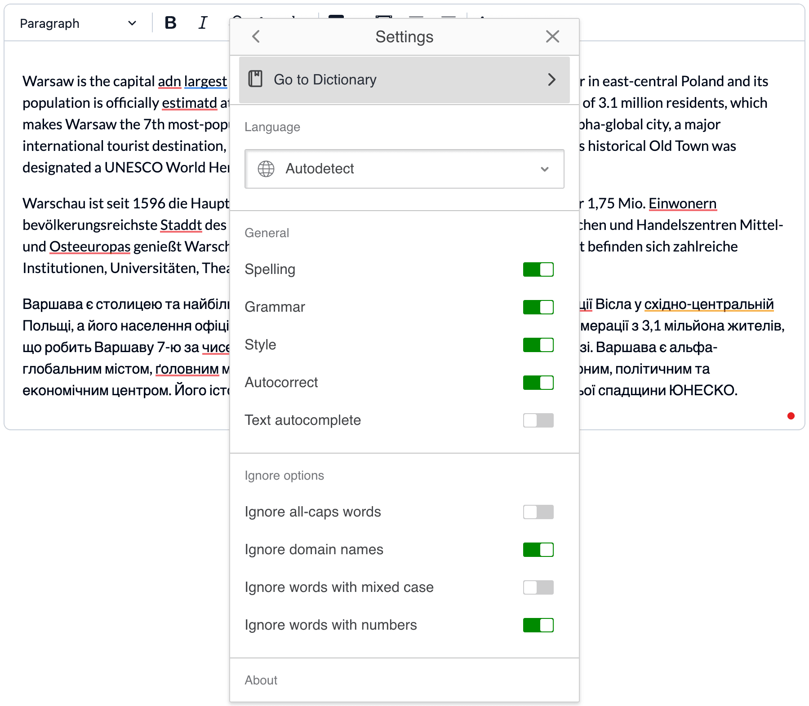

Spelling, grammar, and punctuation checking
WProofreader SDK is an AI-driven, multi-language text correction tool. Spelling, grammar, and punctuation suggestions appear on hover as you type or in a separate dialog aggregating all mistakes and replacement suggestions in one place.
This is a premium add-on that is a part of CKEditor Custom Plan, and delivered by our partner, WebSpellChecker. Choose the Custom Plan to enable it.
Use the toolbar button  to test the spell and grammar check feature in the editor below.
to test the spell and grammar check feature in the editor below.
Warsaw is the capital adn largest city of Poland. The metropolis stands on the Vistula River in east-central Poland and its population is officially estimatd at 1.8 million residents within a greater metropolitan area of 3.1 million residents, which makes Warsaw the 7th most-populous capital city in the European Union. Warsaw is an alpha-global city, a major international tourist destination, and a significaant cultural, political, and economic hub. Its historical Old Town was designated a UNESCO World Heritage Site.
Warschau ist seit 1596 die Hauptstadt Polens und die flächenmäßig größte sowie mit über 1,75 Mio. Einwonern bevölkerungsreichste Staddt des Landes. Als eines der wichtigsten Verkehrs-, wirtschaftlichen und Handelszentren Mittel- und Osteeuropas genießt Warschau große politische und kulturelle Bedetung. In der Stadt befinden sich zahlreiche Institutionen, Universitäten, Theater, Museen und Baudenkmäler.
Варшава є столицею та найбільшим містом Польщі. Мегаполіс розташований на річції Вісла у східно-центральній Польщі, а його населення офіційно оцінюється в 1,8 мільйона жителів у більшій агломерації з 3,1 мільйона жителів, що робить Варшаву 7-ю за чисєльністю населення столицею в Європейському Союзі. Варшава є альфа-глобальним містом, ґоловним міжнародним туристичним центром і значним культурним, політичним та економічним центром. Його історичне Старе місто було визнано обьєктом Всесвітньої спадщини ЮНЕСКО.
The WProofreader badge in the bottom-right corner shows you the total number of mistakes detected. Hover an underlined word to display the WProofreader suggestions for any of the spelling and grammar mistakes found. The suggestion card allows the user to use the feature on the go. If you want to see an overview of all mistakes found, click the “Proofread in dialog” option in the toolbar dropdown. It will invoke a detached floating dialog, which is easy to navigate and perfect for dedicated proofreading sessions.
You can access the WProofreader settings from the toolbar, too. Set the primary language, create a spelling dictionary, and tweak some additional proofreading settings.
You can fine-tune WProofreader via the dedicated settings menu. Choose a primary language from a set of available ones. Create and manage additional custom dictionaries. You can add words to the user dictionary directly from the suggestion card, too. If needed, you can turn off the spell checker and enable it again with a single click.
The text part language feature lets the user set different languages to different portions of the content. The spell and grammar check feature offers full support for multilingual content. If you set the WProofreader language to Auto Detect (or set the auto language in the configuration), the feature will automatically recognize the language for a given sentence. It will then suggest spelling and grammar corrections specifically for that language, as shown in the demo above.

WProofreader checks texts for spelling, grammar, and punctuation mistakes. The autodetect feature facilitates the correction of multilingual texts. Users do not have to manually switch languages to proofread documents with mixed language. Handy spelling autocorrect validates user texts on the fly. Autocomplete suggestions for English make the proofreading process fast and smooth. You can accept the predictive text with a right → arrow key.
The most popular languages used with WProofreader include: American English, Australian English, Arabic, Brazilian Portuguese, British English, Canadian English, Canadian French, Danish, Dutch, Finnish, French, German, Greek, Hebrew, Italian, Indonesian, Norwegian Bokmål, Norwegian Nynorsk, Portuguese, Spanish, Swedish, Turkish, and Ukrainian.
There are more languages available from the WebSpellChecker site. Grammar checking is available for over 20 languages.
The AI-driven tools approach for English, German, and Spanish is a recent addition to the software. It offers a far better checking quality and generates proofreading suggestions based on the context of a sentence. It provides more suitable suggestions that address mistakes with 3 times the accuracy compared to a traditional mechanism.
Here you can check the full list of supported languages.
Apart from the language dictionaries, WebSpellChecker offers two specialized dictionaries: medical and legal.
You can use custom dictionaries in two ways.
One is the user-level dictionary that you can expand during regular use by adding new words. This is a perfect solution for users working on specific content that may contain slang or professional jargon.
The other is the so-called company-level dictionary. These pre-made dictionaries can be uploaded by system administrators or CKEditor 5 integrators and made available across the company, accessible for all users. This way you can share all the benefits of a user-generated dictionary among the team, making the proofreading process more structured and controlled.
The WProofreader UI is designed and oriented toward comfort and ease of use. The proofreading floating dialog can be moved around, addressing the needs of left-handed editors and right-to-left language users. The clear, simple design is more readable for users with vision impairments. You can also navigate and operate the dialog with a keyboard, eliminating the need to use a mouse or another pointing device.
The spell and grammar check is compliant with Web Content Accessibility Guidelines (WCAG) 2.1 and Section 508 accessibility standards.
WProofreader is delivered as a CKEditor 5 plugin, so you can combine it into an editor preset just like other features. To add this feature to your rich-text editor, install the @webspellchecker/wproofreader-ckeditor5 package:
npm install --save @webspellchecker/wproofreader-ckeditor5
Then, add it to your plugin list and the toolbar configuration. Please note, that unlike native CKEditor 5 plugins, this one is imported from its own package. Also, that this import is different than the standard CKEditor 5 plugins import:
import { ClassicEditor } from 'ckeditor5';
import { WProofreader } from '@webspellchecker/wproofreader-ckeditor5';
import '@webspellchecker/wproofreader-ckeditor5/index.css';
ClassicEditor
.create( {
licenseKey: '<YOUR_LICENSE_KEY>', // Or 'GPL'.
plugins: [ WProofreader, /* ... */ ],
toolbar: [ 'wproofreader', /* ... */ ],
wproofreader: {
// Configuration.
}
} )
.then( /* ... */ )
.catch( /* ... */ );At this step, you need to provide a proper configuration. You can use WProofreader either as a cloud solution or hosted on your server (on-premises or in a private cloud).
After signing up for a trial or paid version, you will receive your service ID on your email. You can use it to activate the service.
Add the following configuration to your editor:
ClassicEditor
.create( {
// ... Other configuration options ...
wproofreader: {
serviceId: 'your-service-ID',
srcUrl: 'https://svc.webspellchecker.net/spellcheck31/wscbundle/wscbundle.js'
}
} )Refer to the official documentation for more details about the cloud setup and available configuration options.
After signing up for a trial or paid version, you will receive access to the WebSpellChecker on-premises package to install it on your server.
You will need to add the following configuration to your editor:
ClassicEditor
.create( {
// ... Other configuration options ...
wproofreader: {
serviceProtocol: 'https',
serviceHost: 'localhost',
servicePort: '443',
servicePath: 'virtual_directory/api/',
srcUrl: 'https://host_name/virtual_directory/wscbundle/wscbundle.js'
}
} )Refer to the official documentation for more details about the server setup and available configuration options.
WProofreader configuration is set inside the CKEditor 5 configuration in the wproofreader object. Refer to the WProofreader API for further information.
You can report issues and request features in the official WProofreader for CKEditor 5 repository.